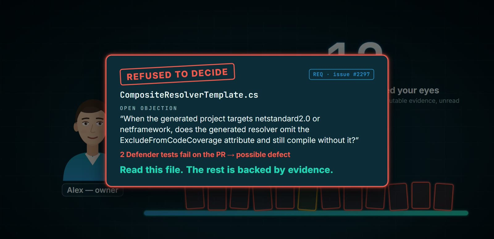

Triage
In or out of the issue's scope, and a risk level from static rules.
rules + Gemini flash
AI reviews. Humans stay accountable.
A review factory for AI-written code where no model approves anything. Only executable evidence counts, and when it's missing, the system refuses to decide and tells a named human exactly what to read.
Four real AI-written pull requests to MessagePack-CSharp, from triage to a named signature.

Reading every line doesn't scale.
Trusting another AI's summary is negligent: it sounds just as sure when it's wrong.
Turn every AI-written change into executable evidence traced to its requirement. Spend human attention only where that evidence is missing. The named owner signs what was checked, what was not, and the risk they accept.
In or out of the issue's scope, and a risk level from static rules.
A test written from the issue alone must fail before the fix and pass after. Outside the issue, nothing may change.
A Prosecutor attacks high-risk files. The Defender can only answer with a test that kills a mutant.
Trust is earned per area and withdrawn after an escape. Humans spot-check a sample of green files.
A 19-second replay of the recorded run for issue #2283; the real one took 18–22 minutes. Every line is what that run actually did.
1 file refused to decide (2 Defender tests fail on the PR), 2 out-of-scope files to glance at, 1 file approved on evidence. This is the real report that run produced:
Its own test and the invariance check were green. Cross-examination showed the AI fix moved the crash instead of removing it.
See the failing testsA one-sentence issue: the test also passed before the fix, and the fix changed behaviour outside the issue.
See the evidence223 low-risk files approved unread, 12 cross-examined, one unrequested change flagged and one out-of-scope README to glance at.
See what the human readsThe AI's own test failed. An independent oracle showed the feature worked and pointed the human at the test.
See both oraclesEach one with the reason it needs your eyes. Everything else is backed by tests you can rerun.

The owner signs three lists by name.
One run approved the moved crash. We logged it as an escape, so trust in that area is withdrawn until five clean signed changes earn it back.
Every test and mutant an AI writes runs in its own disposable, network-less Modal Sandbox. That makes the evidence trustworthy, and lets the review fan out.
.NET 8 and both sides of every PR, compiled once.
No network: AI code can't exfiltrate or download anything.
Only the test result comes back.
to cross-examine the 36 objections of the 237-file PR in parallel.
Modal was never the limit. Past a point, speed is the language model's latency, not our code.
An open objection, a vague ticket, or an escape. It already happened once, and that area lost its trust.
The named engineer who signs. The AI never approves.
Human reading follows risk, not diff size. Compute fans out; the model's latency is the ceiling.